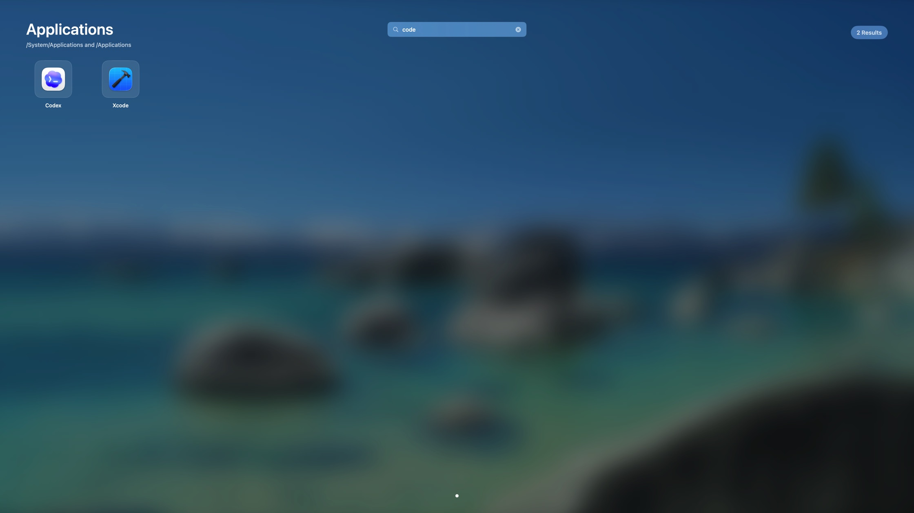
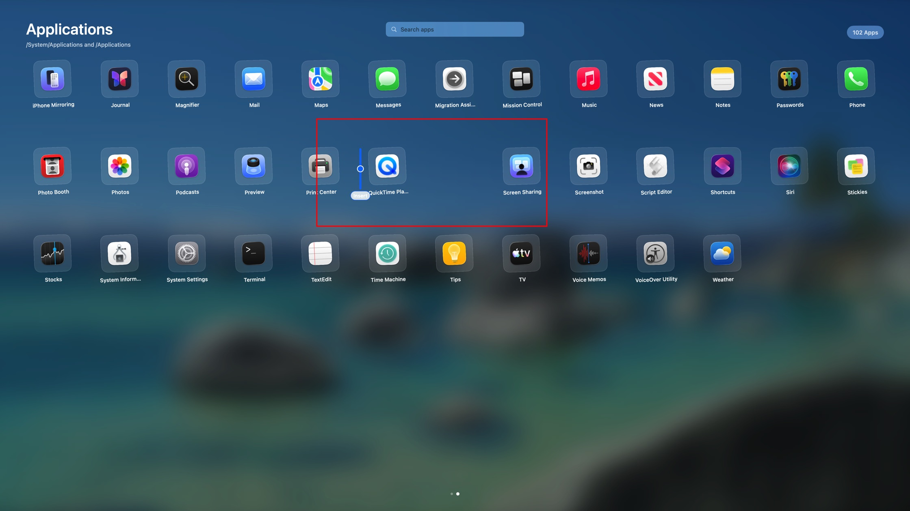
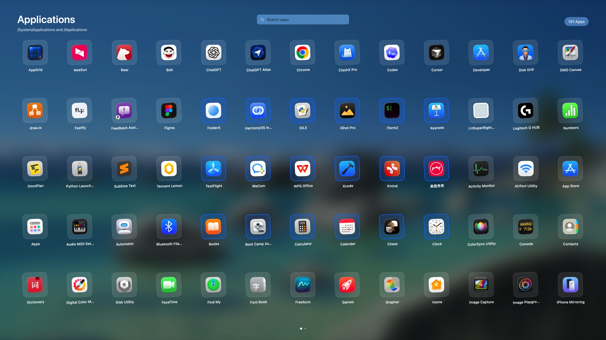
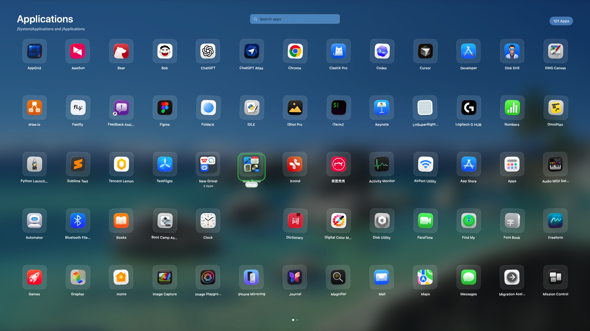
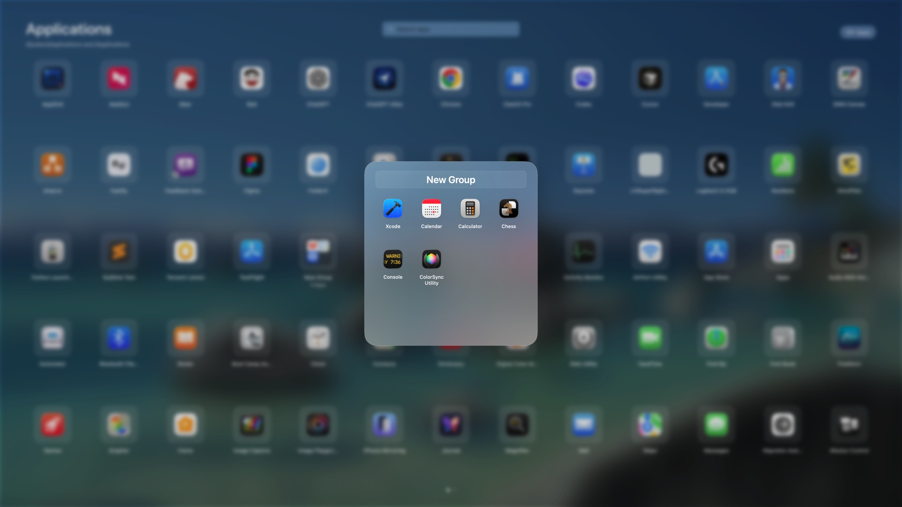
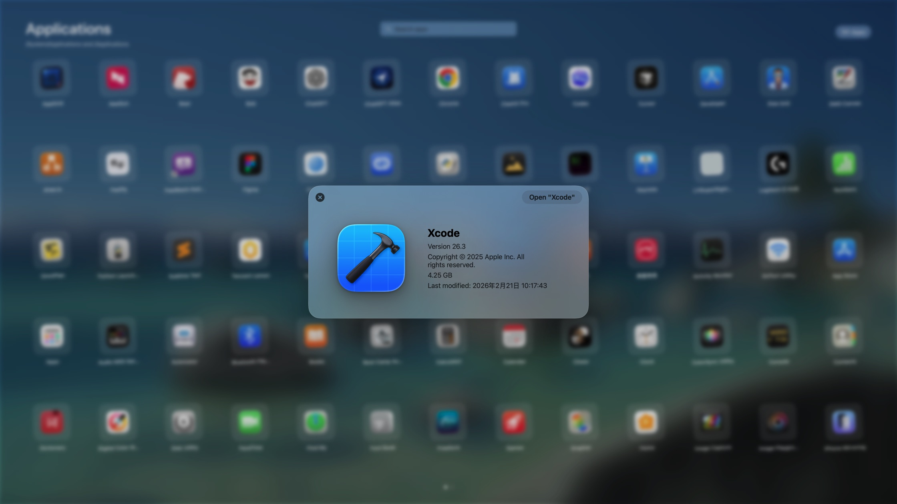
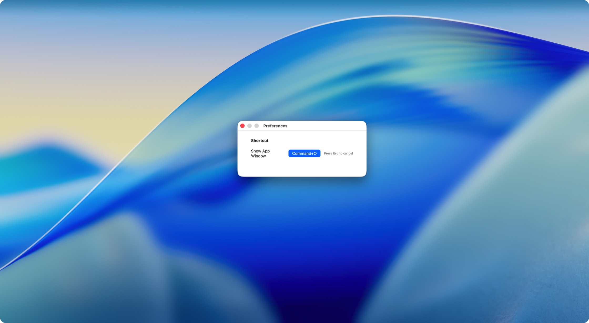

快速查找
键入应用名称即可缩小范围，几秒内到达目标。
核心功能
LaunchNest 专注于一件事：让你更快地找到并打开 Mac 上的应用。
键入应用名称即可缩小范围，几秒内到达目标。
用直观的图标网格浏览应用，熟悉且没有多余干扰。
为 macOS 打造，轻巧、快速，并自然融入系统。
功能一览
从快速查找到分组整理，每个动作都直接、自然，并且随时可以撤回或重新安排。
输入关键词，即时过滤应用。无需翻页，也不用离开当前工作流。

按照自己的使用习惯重新排列应用，让常用工具始终处于顺手的位置。

一次选中多个应用，减少重复操作，更快完成整理。

把相关应用拖到一起即可建立分组，让大型应用库依然保持清晰。

为每个分组起一个容易识别的名称，建立属于自己的分类方式。

查看应用版本、大小和修改时间，也可以从信息面板直接打开。

定义顺手的全局快捷键，在任何场景快速唤起 LaunchNest。

即将发布